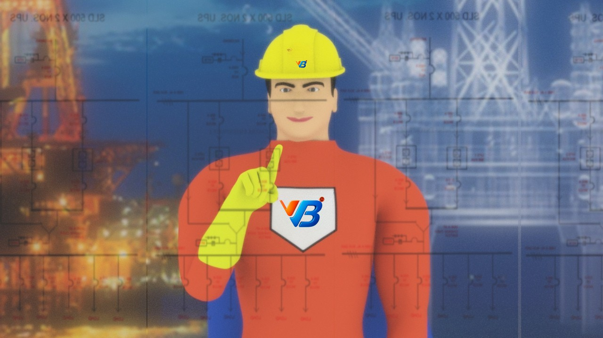

Understanding Process Emulation by Digital Twinning
Process emulation by digital twinning is a cutting-edge technology that involves creating a virtual replica, or "digital twin," of a physical process. This virtual twin simulates the behavior, performance, and characteristics of the real-world process in a highly accurate and detailed manner. By harnessing the power of digital twinning, businesses can gain valuable insights, optimize operations, and drive innovation.

The Benefits of Process Emulation
Enhanced Efficiency: Digital twinning allows businesses to identify bottlenecks, optimize workflows, and streamline processes. By gaining a deep understanding of how the process functions, organizations can make data-driven decisions that drive efficiency and reduce costs.
Improved Productivity
With process emulation, businesses can test different scenarios, identify potential issues, and implement solutions before they occur in the real world. This proactive approach minimizes downtime, increases productivity, and ensures smooth operations.
Informed Decision Making
Digital twinning provides valuable insights into the behavior and performance of processes. By having access to real-time data and simulations, businesses can make informed decisions, anticipate changes, and respond swiftly to market demands.
Innovation and Optimization
Process emulation allows for experimentation and innovation without disrupting real-world operations. By leveraging digital twins, businesses can test alternative approaches, optimize processes, and explore new possibilities, fostering continuous improvement and driving innovation.
Applications Across Industries
Process emulation by digital twinning has wide-ranging applications across various industries:
Manufacturing
By emulating manufacturing processes, businesses can identify areas for improvement, optimize production lines, reduce waste, and enhance quality control.
Energy and Utilities
Digital twinning enables the analysis of complex energy systems, optimizing energy distribution, predicting maintenance needs, and enhancing operational efficiency.
Healthcare
Through process emulation, healthcare providers can simulate patient flows, test new treatment protocols, optimize resource allocation, and improve patient outcomes.
Transportation and Logistics
Digital twins can enhance supply chain management, optimize logistics operations, simulate traffic patterns, and improve delivery performance.
Unlock the Potential with VB® Group
As experts in process emulation by digital twinning, VB® Group is committed to helping businesses unlock their full potential. Our team of experienced professionals provides comprehensive solutions tailored to your specific needs. Contact us today to learn how process emulation can revolutionize your operations and drive innovation.
Ready to embark on a journey of digital transformation? Trust VB® Group as your partner in process emulation by digital twinning. Let's unlock new heights of efficiency and innovation together.